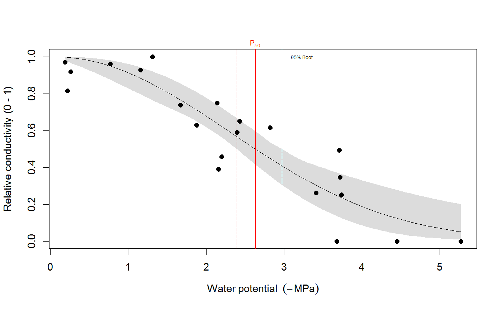
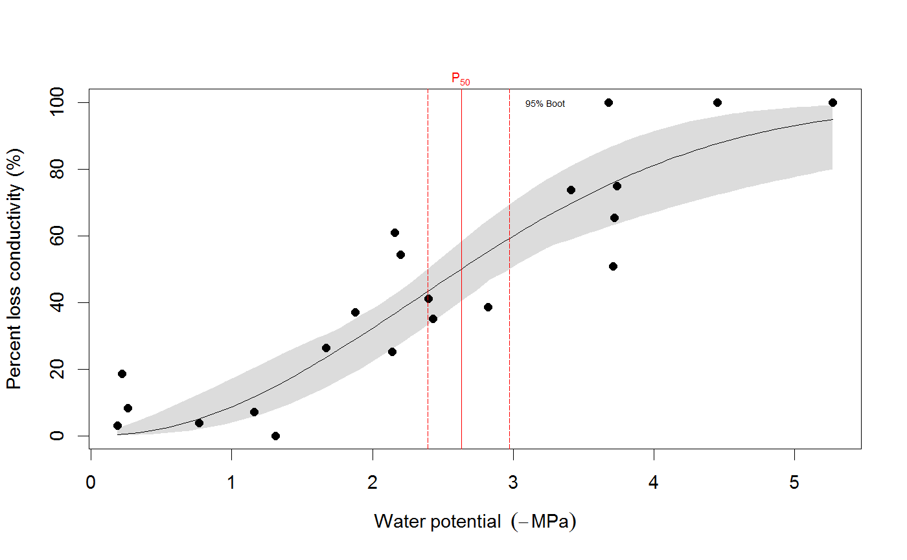
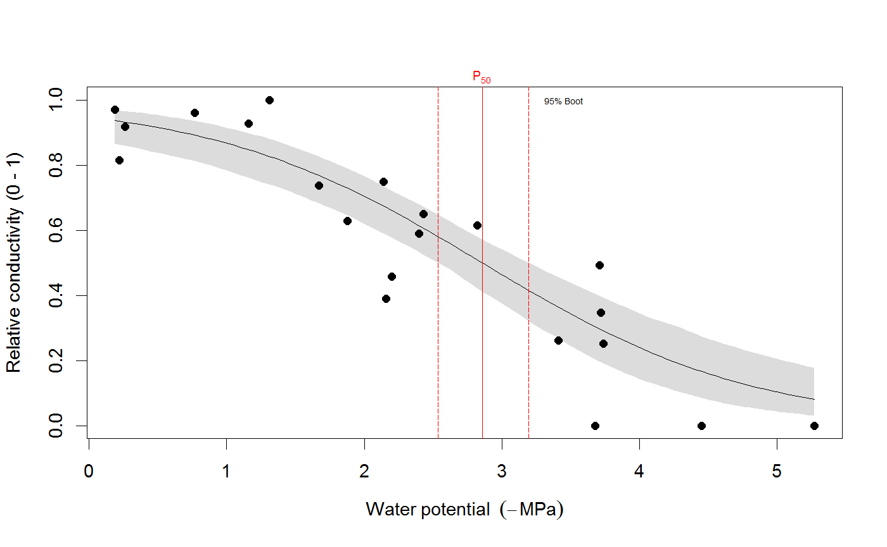
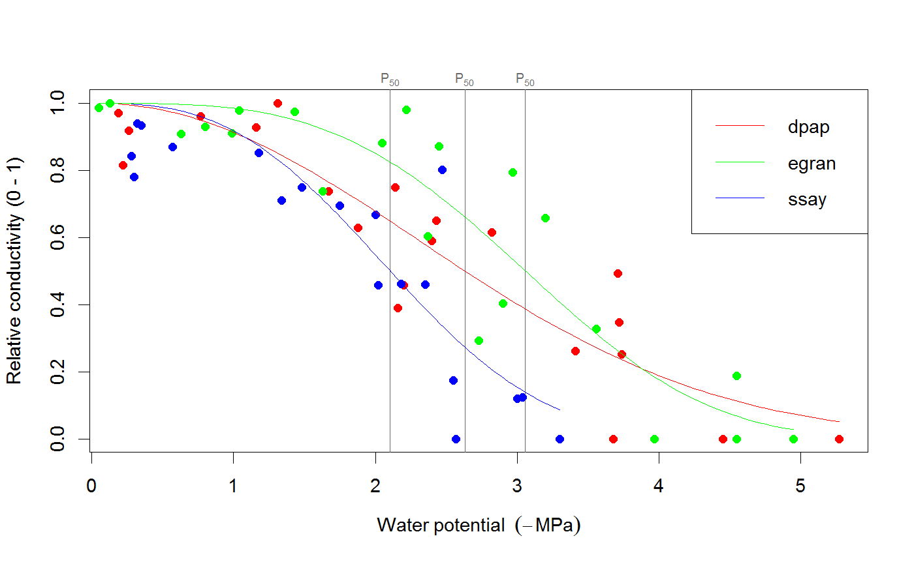
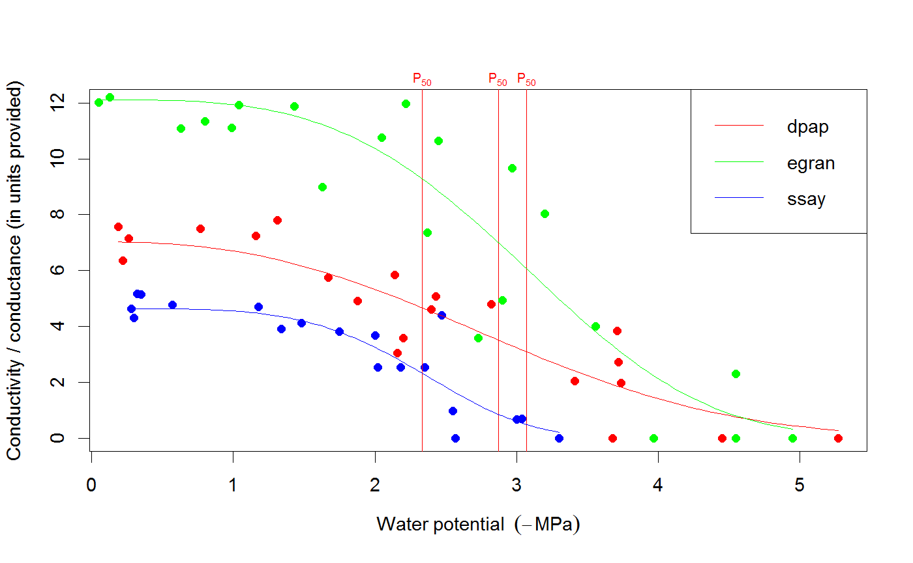
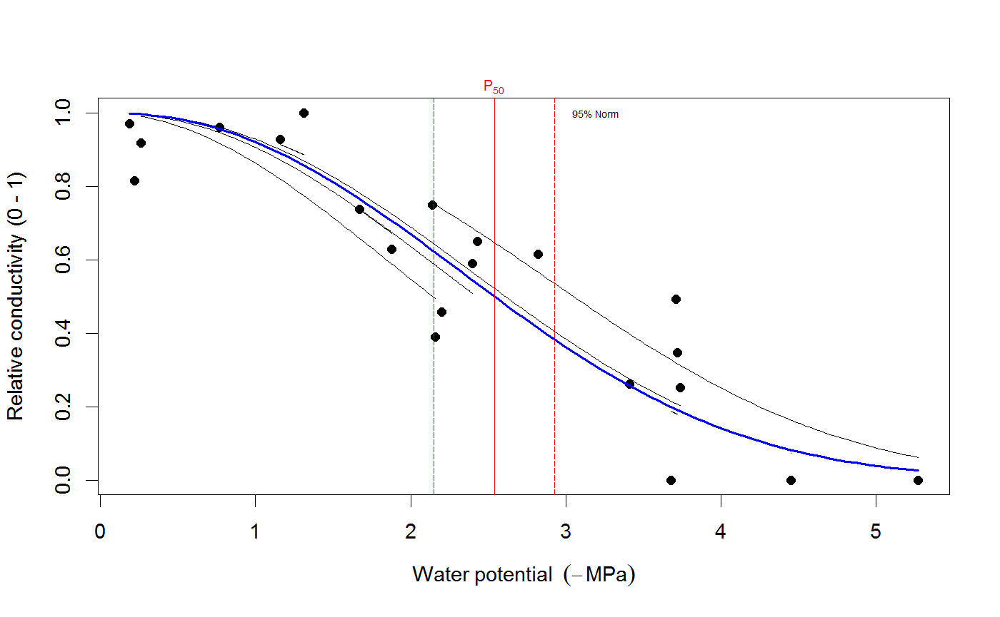

Fit a curve to measurements of stem or leaf conductivity at various water potentials. If measurements are organized as 'percent loss conductivity' (PLC), use the fitplc function. If they are organized as the actual conductance or conductivity (as is common for leaf hydraulic conductance data, for example), use the fitcond function. You can choose to either fit the Weibull function (the default), or the sigmoidal-exponential model. See Details and Examples for more information on how to use these functions.
It is also possible to fit multiple curves at once, for example one for each species or site, with the fitplcs and fitconds functions. This is useful when you have data for multiple curves organized in one file.
Random effects may be incorporated via the random argument (see Examples), in which case nlme will be used (in case of the Weibull), or lme (in case of the sigmoidal model).
See plot.plcfit for documentation on plotting methods for the fitted objects, and the examples below.
fitcond(dfr, varnames = c(K = "K", WP = "MPa"), Kmax = NULL, WP_Kmax = NULL, rescale_Px = FALSE, ...) fitplc(dfr, varnames = c(PLC = "PLC", WP = "MPa"), weights = NULL, random = NULL, model = c("Weibull", "sigmoidal", "loess"), x = 50, coverage = 0.95, bootci = TRUE, nboot = 999, quiet = TRUE, startvalues = NULL, shift_zero_min = FALSE, loess_span = 0.7, ...) fitplcs(dfr, group, ...) fitconds(dfr, group, ...)
| dfr | A dataframe that contains water potential and plc or conductivity/conductance data. |
|---|---|
| varnames | A vector specifying the names of the PLC and water potential data (see Examples). |
| Kmax | Maximum conduct(ance)(ivity), optional (and only when using |
| WP_Kmax | Water potential above which Kmax will be calculated from the data. Optional (and only when using |
| rescale_Px | Logical (default FALSE). If TRUE, rescales calculation of Px relative to the fitted value of conductance/PLC at the maximum (least negative) water potential in the dataset. Use this argument only when you know exactly what that means. Identical to |
| … | Further parameters passed to |
| weights | A variable used as weights that must be present in the dataframe (unquoted, see examples). |
| random | Variable that specifies random effects (unquoted; must be present in dfr). |
| model | Either 'Weibull' or 'sigmoidal'. See Details. |
| x | If the P50 is to be returned, x = 50. Set this value if other points of the PLC curve should be estimated (although probably more robustly done via |
| coverage | The coverage of the confidence interval for the parameters (0.95 is the default). |
| bootci | If TRUE, also computes the bootstrap confidence interval. |
| nboot | The number of bootstrap replicates used for calculating confidence intervals. |
| quiet | Logical (default FALSE), if TRUE, don't print any messages. |
| startvalues | Obsolete - starting values for Weibull now estimated from sigmoidal model fit. |
| shift_zero_min | Logical (default FALSE). If TRUE, shifts the water potential data so that the highest (least negative) value measured is set to zero. This has consequences for estimation of Kmax, and is only used for |
| loess_span | Only used when |
| group | Character; variable in the dataframe that specifies groups. The curve will be fit for every group level. |
Models -
The Weibull model is fit as reparameterized by Ogle et al. (2009), using non-linear regression (nls) or a non-linear mixed-effects model if a random effect is present (nlme). The sigmoidal-exponential model follows the
specification by Pammenter and van Willigen (1998) : PLC is log-transformed so a linear fit can be obtained with lm or lme in the presence of a random effect.
Parameters estimated are PX (water potential at which X
(slope of PLC vs. water potential at P50, MPa per percent). For the sigmoidal model, SX is a parameter combination (and so is PX when x is not 50), so only bootstrap estimates of the confidence intervals are given.
Bootstrap -
We recommend, where possible, to use the bootstrapped confidence intervals for inference (use at least ca 1000 resamples). For the Weibull model, this is only possible when a sufficiently large sample size is available for a single curve (otherwise too many nls fits will fail). For the sigmoidal model, however, bootstrap is always possible and will always be employed (it cannot be turned off).
Confidence intervals -
Calculation of confidence intervals (CI) depends on the method chosen. For the Weibull model, the CI based on profiling ('Normal approximation') is always performed, and a non-parametric bootstrap when bootci=TRUE. Both are output in coef, and the bootstrap CI is used in plotting unless otherwise specified (see plot.plcfit). When a random effect is specified (for the Weibull model), the CI is calculated with intervals.lme. For the sigmoidal model, PX and SX are functions of parameters of a linearized fit, and we thus always use the bootstrap when no random effect is present (it cannot be switched off). When a random effect is included in the sigmoidal model, we use deltaMethod from the car package.
Weights -
If a variable with the name Weights is present in the dataframe, this variable will be used as the weights argument to perform weighted (non-linear) regression. See Examples on how to use this.
Random effects -
If the random argument specifies a factor variable present in the dataframe, random effects will be estimated both for SX and PX. This affects coef as well as the confidence intervals for the fixed effects. For both the Weibull model and the sigmoidal model, only the random intercept terms are estimated (i.e. random=~1|group).
A plot method is available for the fitted object, see Examples below.
# We use the built-in example dataset 'stemvul' in the examples below. See ?stemvul. # Most examples will fit the Weibull model (the default); try running some of the examples # with 'model="sigmoidal"' and compare the results. # 1. Fit one species (or fit all, see next example) dfr1 <- subset(stemvul, Species =="dpap") # Fit Weibull model. Store results in object 'pfit' # 'varnames' specifies the names of the 'PLC' variable in the dataframe, # and water potential (WP). # In this example, we use only 50 bootstrap replicates but recommend you set this # to 1000 or so. pfit <- fitplc(dfr1, varnames=c(PLC="PLC", WP="MPa"), nboot=50) # Look at fit pfit#> Class of object 'plcfit' as returned by 'fitplc'. #> ------------------------------------------------- #> #> Parameters and %s%% confidence interval: #> #> 95% Estimate Norm - 2.5% Norm - 97.5% Boot - 2.5% Boot - 97.5% #> SX 27.639042 19.016029 38.636204 16.745048 35.622913 #> PX 2.631328 2.310614 2.955739 2.391684 2.975172 #># Make a standard plot. The default plot is 'relative conductivity', # (which is 1.0 where PLC = 0). For plotting options, see ?plot.plcfit plot(pfit)# Or plot the percent embolism plot(pfit, what="embol")# Get the coefficients of the fit. coef(pfit)#> Estimate Norm - 2.5% Norm - 97.5% Boot - 2.5% Boot - 97.5% #> SX 27.639042 19.016029 38.636204 16.745048 35.622913 #> PX 2.631328 2.310614 2.955739 2.391684 2.975172# Repeat for the sigmoidal model # Note that varnames specification above is the same as the default, so it # can be omitted. pfit2 <- fitplc(dfr1, model="sigmoid") plot(pfit2)coef(pfit2)#> Estimate Boot - 2.5% Boot - 97.5% #> SX 25.287577 17.559690 33.264051 #> PX 2.857665 2.537777 3.194784# 2. Fit all species in the dataset. # Here we also set the starting values (which is sometimes needed). # In this example, we use only 50 bootstrap replicates but recommend you set this # to 1000 or so. allfit <- fitplcs(stemvul, "Species", varnames=c(PLC="PLC", WP="MPa"), nboot=50) # 3. Plot the fits. plot(allfit, onepanel=TRUE, plotci=FALSE, px_ci="none", pxlinecol="dimgrey")# Coefficients show the estimates and 95% CI (given by 'lower' and 'upper') # Based on the CI's, species differences can be decided. coef(allfit)#> Group Parameter Estimate Norm - 2.5% Norm - 97.5% Boot - 2.5% Boot - 97.5% #> 1 dpap SX 27.639042 19.016029 38.636204 22.052236 37.583669 #> 2 dpap PX 2.631328 2.310614 2.955739 2.305253 2.923221 #> 3 egran SX 38.762203 24.503730 65.558933 26.872801 94.308415 #> 4 egran PX 3.058613 2.762927 3.370941 2.610811 3.347017 #> 5 ssay SX 46.221391 24.890293 80.460977 17.976285 67.887883 #> 6 ssay PX 2.104288 1.779723 2.355404 1.935252 2.424353# 3. Specify Weights. The default variable name is Weights, if present in the dataset # it will be used for weighted non-linear regression # In this example, we use only 50 bootstrap replicates but recommend you set this # to 1000 or so. dfr1$Weights <- abs(50-dfr1$PLC)^1.2 pfit <- fitplc(dfr1, varnames=c(PLC="PLC", WP="MPa"), weights=Weights, nboot=50) coef(pfit)#> Estimate Norm - 2.5% Norm - 97.5% Boot - 2.5% Boot - 97.5% #> SX 40.145239 30.607389 54.544789 29.595346 53.733330 #> PX 2.602145 2.339932 2.871339 2.288247 2.850159# 4. Fit the Weibull curve directly to the raw conductance data. # Use this option when you don't want to transform your data to PLC. # You have two options: specify the 'maximum' conductance yourself (and provide Kmax), # or set the threshold water potential (Kmax_WP), which is then used to calculate Kmax # (from the average of the conductance values where WP > Kmax_WP). # Option 1 : maximum conductivity (i.e. at full hydration) is known, and used as input. kfit1 <- fitcond(dfr1, varnames=c(K="Cond", WP="MPa"), Kmax=7.2, nboot=50) # Option 2 : calculate maximum cond. from data where water potential : -0.3 MPa. # In this example, we use only 50 bootstrap replicates but recommend you set this # to 1000 or so. kfit2 <- fitcond(dfr1, varnames=c(K="Cond", WP="MPa"), WP_Kmax = -0.3, nboot=50) # Use plot(kfit1) as for fitplc, as well as coef() etc. # Fit multiple conductivity curves at once (bootstrap omitted for speed). kfits3 <- fitconds(stemvul, "Species", varnames=list(K="Cond", WP="MPa"), WP_Kmax=-0.3, boot=FALSE) plot(kfits3, onepanel=TRUE, ylim=c(0,12), px_ci="none")# 5. Random effects. # This example takes into account the fact that the individual data points for a species are not # independent, but rather clustered by branch. fitr <- fitplc(dfr1, random=Branch) # Visualize the random effects. plot(fitr, plotrandom=TRUE)